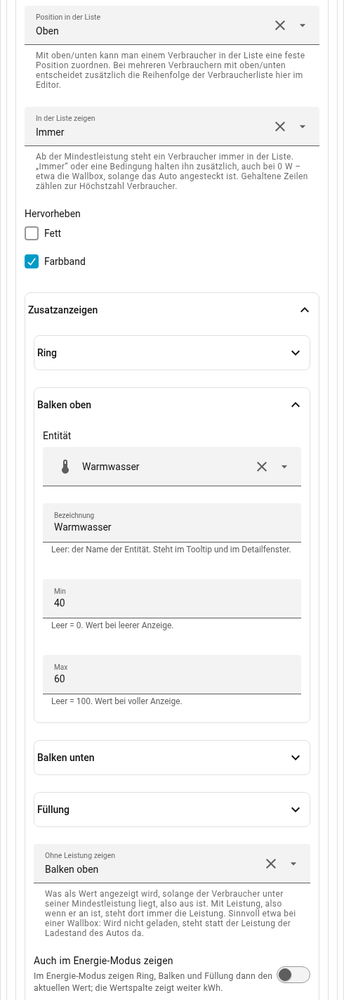
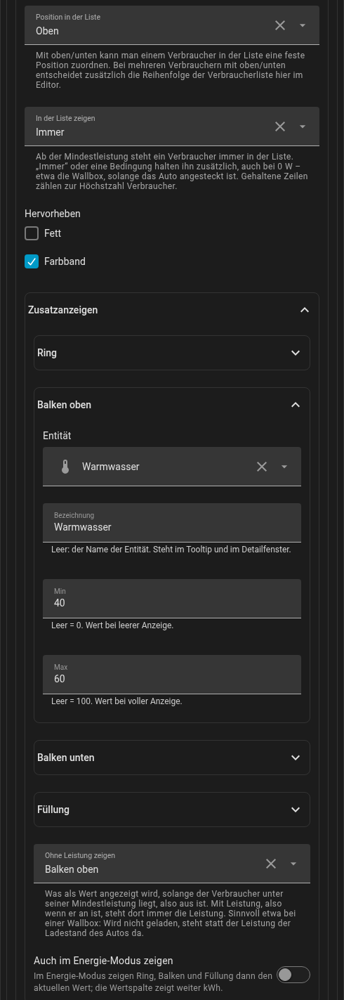
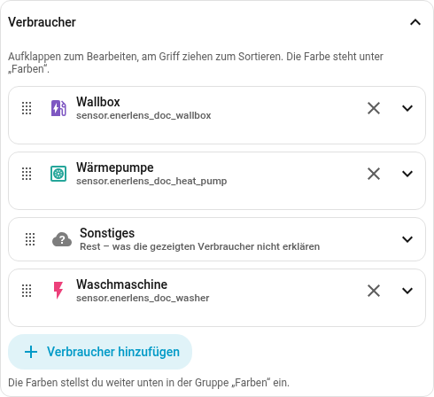
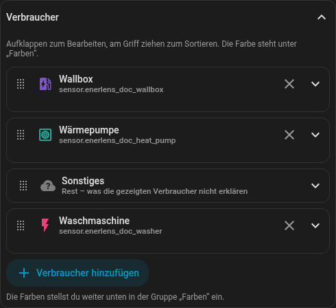
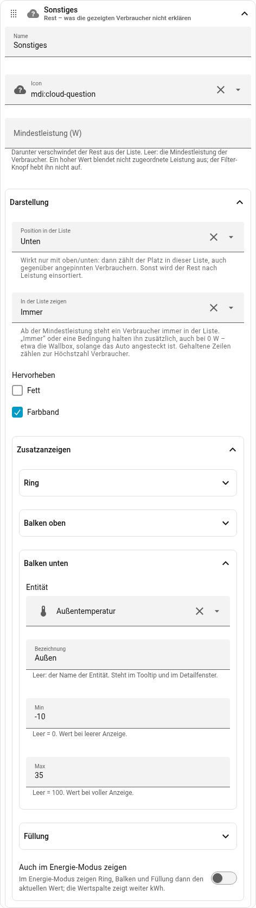
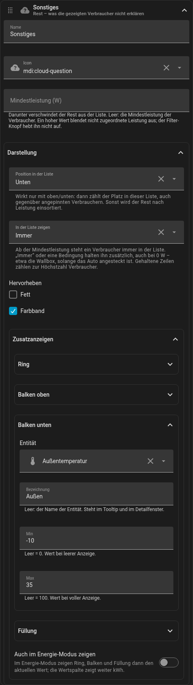

consumers:
- entity: sensor.wallbox_leistung
name: Wallbox
position: top # fest oben
show: always # immer in der Liste
highlight: { bold: true, band: true }
indicators:
ring: { entity: sensor.auto_ladestand }
idle_value: ring # ohne Leistung: der Ladestand
- entity: sensor.waermepumpe_leistung
name: Wärmepumpe
min_w: 40
show: always
indicators:
bar_top: { entity: sensor.warmwasser, min: 40, max: 60, label: Warmwasser }
bar_bottom:
entity: sensor.vorlauf
min: 20
max: 55
label: Vorlauf
color: "#e53935" # eigene Farbe
idle_value: bar_top # unter 40 W: „52 °C“
- entity: sensor.heizstab_leistung
name: Pufferspeicher
icon: mdi:water-boiler
indicators:
fill: { entity: sensor.puffer_ladung, label: Ladung }
- entity: sensor.drucker_leistung
name: 3D-Drucker
indicators:
bar_top: { entity: sensor.druckfortschritt, label: Druckfortschritt }
- entity: sensor.waschmaschine_leistung
position: bottom
highlight: { band: true }Zusatzwerte an den Verbrauchern
Wie die Knoten kann jeder Verbraucher in der Liste mehr zeigen als seine Leistung: einen Ring um sein Icon, einen dünnen Balken oben oder unten in der Zeile, ein Icon, das sich füllt. Dazu lässt er sich fest oben oder unten anpinnen, immer oder unter einer Bedingung in der Liste halten und hervorheben.
Zum Ansehen: Eine Runde dauert anderthalb Minuten. Die Wallbox ist oben angepinnt und hervorgehoben; lädt sie nicht, zeigt sie den Ladestand des Autos. Die Wärmepumpe läuft und ruht – im Ruhezustand steht statt der Leistung die Warmwasser-Temperatur da, ihre Balken zeigen Warmwasser und Vorlauf. Der Pufferspeicher füllt sich, der 3D-Drucker zeigt seinen Fortschritt, die Waschmaschine steht unten.
Mit der Maus über ein Icon oder einen Balken fahren: Dann steht dort der Wert mit seiner Bezeichnung, etwa „Warmwasser 52 °C“ – auch hier in der Demo. Ein Tipp auf die Zeile öffnet in Home Assistant das Fenster mit dem Verlauf der Leistung und jedes Zusatzwerts.
So sieht das in YAML aus:
Im Editor steht das alles beim Verbraucher unter Darstellung; die Farben von Ring und Balken unter Farben. Die Wärmepumpe aus dem Beispiel sieht dort so aus – oben angepinnt, mit Farbband, Warmwasser als Balken oben:


Zusatzanzeigen
Der Ring ist eine von vier Zusatzanzeigen, die jeder Verbraucher haben kann, einzeln oder zusammen und ohne zusätzlichen Platz in der Zeile:
| Platz | Aussehen |
|---|---|
|
Ring um Icon bzw. Farbpunkt |
|
dünner Balken oben bzw. unten in der Zeile, vom Namen bis zum Wert |
|
Farbpunkt füllt sich von unten; bei einem Icon füllt sich ein Feld dahinter |
Jeder Platz hat eine entity, einen Bereich min bis max (Standard 0 bis
100) und auf Wunsch eine label; Ring und Balken haben eine eigene Farbe
(im Editor unter Farben), die Füllung die des Verbrauchers. Ein Beispiel ist
die Warmwasser-Temperatur einer Wärmepumpe:
consumers:
- entity: sensor.waermepumpe_leistung
name: Wärmepumpe
min_w: 40
show: always
indicators:
bar_top:
entity: sensor.warmwasser_temperatur
min: 40
max: 60
label: Warmwasser
idle_value: bar_top # unter 40 W: „52 °C“ statt der LeistungWertspalte (idle_value): Mit Leistung steht dort die Leistung. Unter der
Mindestleistung der Zeile (min_w, sonst min_consumer_w) steht der gewählte
Zusatzwert, mit Einheit, so wie Home Assistant ihn zeigt. Die Spalte wechselt
im Takt der Liste, nicht bei jedem Messwert.
Tooltip und Klick: Mit der Maus über Icon oder Balken steht der Wert mit seiner Bezeichnung; ein Tipp auf die Zeile öffnet das Fenster mit der Leistung und darunter jedem Zusatzwert in einem eigenen Diagramm.
Energie-Modus: Dort entfallen die Zusatzanzeigen, wie die Zusatzwerte an den
Knoten. Mit in_energy: true bleiben sie und zeigen den Wert von jetzt; der
Tooltip sagt dann „· jetzt“, die Wertspalte zeigt weiter kWh.
Ältere Schreibweisen: charge (mit soc und label) bedeutet einen Ring
von 0 bis 100 % mit idle_value: ring und in_energy: true; charge.show mit
plugged und unplugged bedeutet show und condition. Beides funktioniert
weiter. Ändert man den Verbraucher im Editor, schreibt er ihn in der neuen
Form.
Anpinnen, halten, hervorheben
Das gilt für jeden Verbraucher, nicht nur für die Wallbox.
Position (position): top oder bottom stellt die Zeile fest oben oder
unten in die Liste; mehrere stehen in der Reihenfolge der Konfiguration, im
Editor per Ziehen sortiert. Ohne Angabe sortiert sich die Zeile nach Leistung.
Die Position entscheidet nur über den Platz, nicht darüber, ob die Zeile
erscheint.
In der Liste zeigen (show): Ab seiner Mindestleistung steht ein Verbraucher
ohnehin in der Liste. always hält ihn zusätzlich immer dort, condition nur,
solange die Bedingung erfüllt ist – auch bei 0 W. Keine Einstellung blendet
einen Verbraucher aus, der Leistung zieht.
Bedingung (condition): ein Sensor, ein Operator und ein Wert. "=" und
"!=" nehmen einen oder mehrere Zustände („ist einer davon" / „ist keiner
davon"), ">", "<", ">=" und "⇐" genau eine Zahl, etwa
sensor.batterie_spannung ">" 10.5. Die Operatoren stehen in YAML in
Anführungszeichen. Ist der Sensor kurz nicht verfügbar, gilt seine letzte
Antwort. Wer mehr braucht – einen Bereich, ein Attribut, zwei Bedingungen –,
baut sich einen Helfer in Home Assistant und nimmt ihn als Sensor.
Höchstzahl (max_consumers): Gehaltene Zeilen zählen mit und bekommen ihre
Plätze zuerst, die übrigen füllen die stärksten Verbraucher. Halten mehr Zeilen,
als die Höchstzahl erlaubt, erscheinen trotzdem alle gehaltenen – der Editor
sagt dann, dass andere Verbraucher nicht mehr erscheinen.
Hervorheben (highlight): bold: true setzt Name und Wert fett,
band: true hinterlegt die Zeile leicht in der Farbe des Verbrauchers; beides
geht einzeln oder zusammen und braucht keinen zusätzlichen Platz.
Im Energie-Modus gelten Position und always genauso; eine Bedingung beschreibt
den Zustand jetzt und wird dort nicht ausgewertet.
Die Rest-Zeile
Der Rest ist der Hauswert minus die gezeigten Verbraucher. Er lässt sich wie
ein Verbraucher einstellen – mit einem Eintrag type: rest statt einer
Entität in der Verbraucherliste:
consumers:
- entity: sensor.wallbox_leistung
position: top
- type: rest
name: Sonstiges
icon: mdi:cloud-question
position: bottom
show: always
highlight: { band: true }
indicators:
bar_bottom: { entity: sensor.aussentemperatur, min: -10, max: 35, label: Außen }
- entity: sensor.waschmaschine_leistung
position: bottom- Name, Icon, Farbe (
name,icon,color) wie beim Verbraucher. - Mindestleistung (
min_w): darunter verschwindet der Rest; ohne Angabe giltmin_consumer_w. Der Filter-Knopf hebt sie nicht auf. - Position (
position):topoderbottom. Unter den angepinnten Zeilen zählt der Platz des Eintrags in der Liste – im Beispiel steht der Rest unten über der Waschmaschine. Ohne Position wird er nach Leistung einsortiert. - In der Liste zeigen (
show: always): Der Rest bleibt auch unter seiner Mindestleistung stehen. Ist er negativ oder fehlt der Hauswert, steht dort „—“ statt einer Zahl. Er zählt nicht zur Höchstzahl der Verbraucher. - Hervorheben und Zusatzanzeigen wie beim Verbraucher – die Zusatzanzeigen mit jeder beliebigen Entität, etwa der Außentemperatur.
Nicht beim Rest: eine Bedingung und „Ohne Leistung zeigen“; dafür fehlt ihm eine eigene Entität bzw. eine Geräteschwelle.
Im Editor steht der Rest als eigener Eintrag in der Verbraucherliste, ohne Löschen-Knopf, per Ziehen verschiebbar. Seine Farbe steht unter Farben.




Ältere Schreibweise: list.rest_label, icons.rest und colors.rest gelten
weiter. Ändert man den Rest im Editor, schreibt er den Eintrag type: rest und
übernimmt diese Werte dorthin.